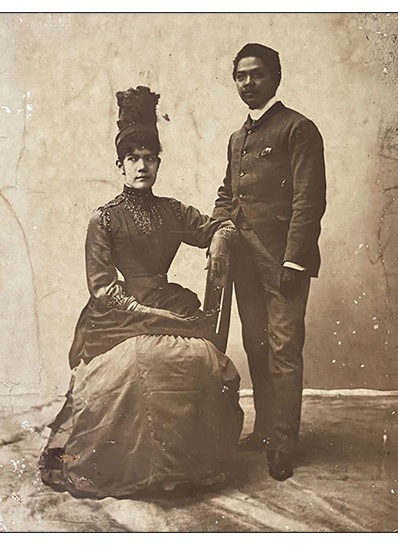

Juan Luna de San Pedro y Novicio Ancheta was a Filipino painter, sculptor and a political activist of the Philippine Revolution during the late 19th century. He became one of the first recognized Philippine artists.
On December 4, 1886, Luna married María de la Paz Pardo de Tavera, a sister of his friends Félix and Trinidad Pardo de Tavera. She was the prized daughter of a very tight-knit, very wealthy political family in self-exile from the Philippines; the Pardo de Taveras, Filipinos of Spanish nobility.